Introductoion to analysing microbial proteomics data in R
Comparative proteomic profiling of Anaerobutyricum soehngenii (DSM17630)
Sudarshan A. Shetty,
30 September, 2020
Introduction
This tutorial is focused towards analysing microbial proteomics data. Most of the analysis is done using the DEP R package created by Arne Smits and Wolfgang Huber. Reference: Zhang X, Smits A, van Tilburg G, Ovaa H, Huber W, Vermeulen M (2018). “Proteome-wide identification of ubiquitin interactions using UbIA-MS.” Nature Protocols, 13, 530–550..
The data structure used by DEP is SummarizedExperiment.
The data used in this tutorial is from Shetty, S.A., Boeren, S., Bui, T.P.N., Smidt, H. and De Vos, W.M., 2020. Unravelling lactate-acetate conversion to butyrate by intestinal Anaerobutyricum and Anaerostipes species. bioRxiv.
[Source for this tutorial] https://github.com/microsud/Bacterial-Proteomics-in-R
The overview of experiment:
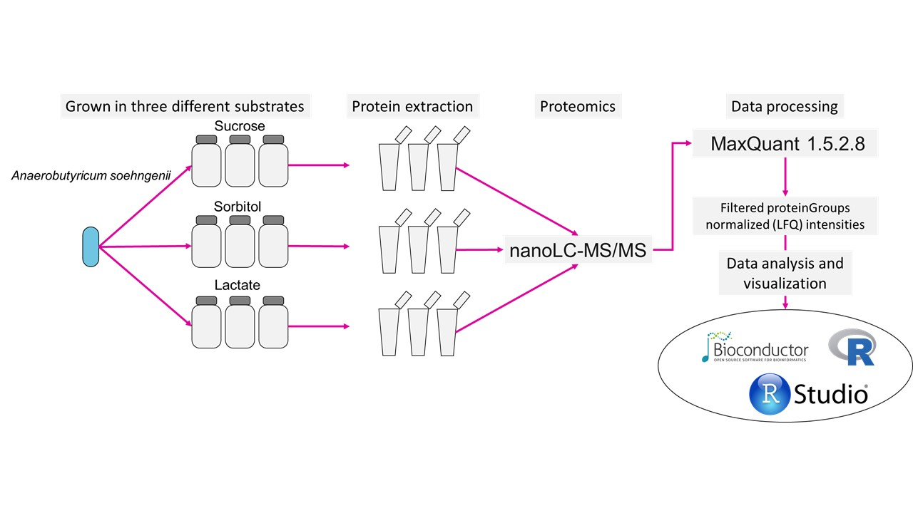
We will ain to identify key proteins that are invovled on utilization of lactate, sorbitol and sucrose.
Initiation
Installing packages
#https://bioconductor.org/packages/devel/bioc/vignettes/DEP/inst/doc/DEP.html
#http://bioconductor.org/packages/release/bioc/vignettes/MSnbase/inst/doc/MSnbase-demo.html
.cran_packages <- c("ggplot2", "patchwork", "dplyr", "ggpubr", "devtools","pheatmap")
.bioc_packages <- c("SummarizedExperiment", "DEP")
.inst <- .cran_packages %in% installed.packages()
if(any(!.inst)) {
install.packages(.cran_packages[!.inst])
}
if (!requireNamespace("BiocManager", quietly = TRUE))
install.packages("BiocManager")
BiocManager::install(.bioc_packages)Load libraries
library("DEP")
library("ggplot2")
library("dplyr")
library("pheatmap")
library("SummarizedExperiment")
library("ggpubr")
library("patchwork")Load the data recieved from MaxQuant.
Import data
Peptide/Proteins intensities
data <- read.csv("three_carbon.csv",
header = T,
row.names = 1)Check what this files consists.
head(data)[1:5] # this will list first 5 rows and all columns## Majority.protein.IDs
## CON__sp|P00760|TRY1_BOVIN;CON__sp|P00761|TRYP_PIG CON__sp|P00760|TRY1_BOVIN
## CON__sp|P02533|K1C14_HUMAN CON__sp|P02533|K1C14_HUMAN
## CON__sp|P02769|ALBU_BOVIN CON__sp|P02769|ALBU_BOVIN
## CON__sp|P04259|K2C6B_HUMAN CON__sp|P04259|K2C6B_HUMAN
## CON__sp|P04264|K2C1_HUMAN CON__sp|P04264|K2C1_HUMAN
## CON__sp|P08779|K1C16_HUMAN CON__sp|P08779|K1C16_HUMAN
## Peptide.counts..all.
## CON__sp|P00760|TRY1_BOVIN;CON__sp|P00761|TRYP_PIG 13;1
## CON__sp|P02533|K1C14_HUMAN 9
## CON__sp|P02769|ALBU_BOVIN 8
## CON__sp|P04259|K2C6B_HUMAN 12
## CON__sp|P04264|K2C1_HUMAN 38
## CON__sp|P08779|K1C16_HUMAN 12
## Peptide.counts..razor.unique.
## CON__sp|P00760|TRY1_BOVIN;CON__sp|P00761|TRYP_PIG 13;1
## CON__sp|P02533|K1C14_HUMAN 2
## CON__sp|P02769|ALBU_BOVIN 8
## CON__sp|P04259|K2C6B_HUMAN 7
## CON__sp|P04264|K2C1_HUMAN 38
## CON__sp|P08779|K1C16_HUMAN 8
## Peptide.counts..unique.
## CON__sp|P00760|TRY1_BOVIN;CON__sp|P00761|TRYP_PIG 13;1
## CON__sp|P02533|K1C14_HUMAN 2
## CON__sp|P02769|ALBU_BOVIN 8
## CON__sp|P04259|K2C6B_HUMAN 1
## CON__sp|P04264|K2C1_HUMAN 33
## CON__sp|P08779|K1C16_HUMAN 5
## Gene.names
## CON__sp|P00760|TRY1_BOVIN;CON__sp|P00761|TRYP_PIG
## CON__sp|P02533|K1C14_HUMAN
## CON__sp|P02769|ALBU_BOVIN
## CON__sp|P04259|K2C6B_HUMAN
## CON__sp|P04264|K2C1_HUMAN
## CON__sp|P08779|K1C16_HUMANCheck which columns do we have in this dataset.
colnames(data)## [1] "Majority.protein.IDs"
## [2] "Peptide.counts..all."
## [3] "Peptide.counts..razor.unique."
## [4] "Peptide.counts..unique."
## [5] "Gene.names"
## [6] "Fasta.headers"
## [7] "Number.of.proteins"
## [8] "Peptides"
## [9] "Razor...unique.peptides"
## [10] "Unique.peptides"
## [11] "Peptides.LacA"
## [12] "Peptides.LacB"
## [13] "Peptides.LacC"
## [14] "Peptides.SorbA"
## [15] "Peptides.SorbB"
## [16] "Peptides.SorbC"
## [17] "Peptides.SucA"
## [18] "Peptides.SucB"
## [19] "Peptides.SucC"
## [20] "Razor...unique.peptides.LacA"
## [21] "Razor...unique.peptides.LacB"
## [22] "Razor...unique.peptides.LacC"
## [23] "Razor...unique.peptides.SorbA"
## [24] "Razor...unique.peptides.SorbB"
## [25] "Razor...unique.peptides.SorbC"
## [26] "Razor...unique.peptides.SucA"
## [27] "Razor...unique.peptides.SucB"
## [28] "Razor...unique.peptides.SucC"
## [29] "Unique.peptides.LacA"
## [30] "Unique.peptides.LacB"
## [31] "Unique.peptides.LacC"
## [32] "Unique.peptides.SorbA"
## [33] "Unique.peptides.SorbB"
## [34] "Unique.peptides.SorbC"
## [35] "Unique.peptides.SucA"
## [36] "Unique.peptides.SucB"
## [37] "Unique.peptides.SucC"
## [38] "Sequence.coverage...."
## [39] "Unique...razor.sequence.coverage...."
## [40] "Unique.sequence.coverage...."
## [41] "Mol..weight..kDa."
## [42] "Sequence.length"
## [43] "Sequence.lengths"
## [44] "Fraction.average"
## [45] "Fraction.1"
## [46] "Fraction.2"
## [47] "Fraction.3"
## [48] "Q.value"
## [49] "Score"
## [50] "Identification.type.LacA"
## [51] "Identification.type.LacB"
## [52] "Identification.type.LacC"
## [53] "Identification.type.SorbA"
## [54] "Identification.type.SorbB"
## [55] "Identification.type.SorbC"
## [56] "Identification.type.SucA"
## [57] "Identification.type.SucB"
## [58] "Identification.type.SucC"
## [59] "Sequence.coverage.LacA...."
## [60] "Sequence.coverage.LacB...."
## [61] "Sequence.coverage.LacC...."
## [62] "Sequence.coverage.SorbA...."
## [63] "Sequence.coverage.SorbB...."
## [64] "Sequence.coverage.SorbC...."
## [65] "Sequence.coverage.SucA...."
## [66] "Sequence.coverage.SucB...."
## [67] "Sequence.coverage.SucC...."
## [68] "Intensity"
## [69] "Intensity.LacA"
## [70] "Intensity.LacB"
## [71] "Intensity.LacC"
## [72] "Intensity.SorbA"
## [73] "Intensity.SorbB"
## [74] "Intensity.SorbC"
## [75] "Intensity.SucA"
## [76] "Intensity.SucB"
## [77] "Intensity.SucC"
## [78] "iBAQ"
## [79] "iBAQ.LacA"
## [80] "iBAQ.LacB"
## [81] "iBAQ.LacC"
## [82] "iBAQ.SorbA"
## [83] "iBAQ.SorbB"
## [84] "iBAQ.SorbC"
## [85] "iBAQ.SucA"
## [86] "iBAQ.SucB"
## [87] "iBAQ.SucC"
## [88] "LFQ.intensity.LacA"
## [89] "LFQ.intensity.LacB"
## [90] "LFQ.intensity.LacC"
## [91] "LFQ.intensity.SorbA"
## [92] "LFQ.intensity.SorbB"
## [93] "LFQ.intensity.SorbC"
## [94] "LFQ.intensity.SucA"
## [95] "LFQ.intensity.SucB"
## [96] "LFQ.intensity.SucC"
## [97] "MS.MS.count.LacA"
## [98] "MS.MS.count.LacB"
## [99] "MS.MS.count.LacC"
## [100] "MS.MS.count.SorbA"
## [101] "MS.MS.count.SorbB"
## [102] "MS.MS.count.SorbC"
## [103] "MS.MS.count.SucA"
## [104] "MS.MS.count.SucB"
## [105] "MS.MS.count.SucC"
## [106] "MS.MS.count"
## [107] "Only.identified.by.site"
## [108] "Reverse"
## [109] "Potential.contaminant"
## [110] "id"
## [111] "Peptide.IDs"
## [112] "Peptide.is.razor"
## [113] "Mod..peptide.IDs"
## [114] "Evidence.IDs"
## [115] "MS.MS.IDs"
## [116] "Best.MS.MS"
## [117] "Deamidation..NQ..site.IDs"
## [118] "Oxidation..M..site.IDs"
## [119] "Deamidation..NQ..site.positions"
## [120] "Oxidation..M..site.positions"We have 121 columns. These consists of a variaty of information.
Import sample information
Note: Important to have column called Condition
# Read sample information
sam_dat <- read.csv("sample_data_carbon.csv", header = T,
row.names = 1, check.names = F)
rownames(sam_dat)## [1] "LacA" "LacB" "LacC" "SorbA" "SorbB" "SorbC" "SucA" "SucB" "SucC"Process the sample data to add three columns, condition,label and replicate.
experimental_design <- sam_dat
sam_dat$condition <- sam_dat$Condition
sam_dat$label <- rownames(sam_dat)
sam_dat$replicate <- c("1","2","3","1","2","3","1","2","3")Pre-processing and QC
We first focus on two columns, Reverse and Potential.contaminant. Proteomics experiments are are sensititve to contaminants, of which commonly observed are human keratins and albumin. We need to remove these potential contaminants and decoy database hits.
# Filter out contaminants
data_2 <- filter(data, Reverse != "+", Potential.contaminant != "+")
# check if any duplicated protiens exists?
data_2$Gene.names %>% duplicated() %>% any()## [1] FALSEOrigianlly loaded data consisted of 1000 rows and 120 cols. These included potential contaminats.
dim(data)## [1] 1000 120After removing potential contaminants, we have 965 proteins.
dim(data_2)## [1] 965 120Extract the columns with LFQ intesity. These are the values we want to use for our analysis.
# extract the columns with LFQ intesity.
LFQ_columns <- grep("LFQ.", colnames(data_2)) Clean up names
data_2$Gene.names <- gsub("EHL_","EHLA_", data_2$Gene.names)
data <- tidyr::separate(data, Gene.names, c("Gene.names", "Product name"), sep = " ", remove = TRUE)## Warning: Expected 2 pieces. Missing pieces filled with `NA` in 1000 rows [1, 2,
## 3, 4, 5, 6, 7, 8, 9, 10, 11, 12, 13, 14, 15, 16, 17, 18, 19, 20, ...].data_unique <- make_unique(data_2, "Gene.names", "Fasta.headers", delim = ";")LFQ_columns <- grep("LFQ.", colnames(data_unique))Make SummarizedExperiment
data_se <- make_se(data_unique, LFQ_columns, sam_dat)
# get LFQ column numbers
data_se_parsed <- make_se_parse(data_unique, LFQ_columns)Overlap of proteins
Check for overlap of protein identifications between samples.
overlap <- plot_frequency(data_se)
DT::datatable(overlap$data)Filtering
We will use a cut-off so as to have only those proteins that are detected in 2 out of three replicates for each condition.
# Filter for proteins that are identified in all replicates of at least one condition
#data_filt <- filter_missval(data_se, thr = 0)
# Less stringent filtering:
# Filter for proteins that are identified in 2 out of 3 replicates of at least one condition
data_filt <- filter_missval(data_se, thr = 1)Number of protiens
Check for number of identified proteins per sample
p.num.prot <- plot_numbers(data_filt)
p.num.prot <- p.num.prot + geom_text(aes(label = sprintf("%.1f", sum), y= sum),
vjust = 3)
p.num.prot <- p.num.prot + scale_fill_manual("Carbon Source",
values = c("#fbb4ae",
"#b3cde3",
"#ccebc5"))
print(p.num.prot)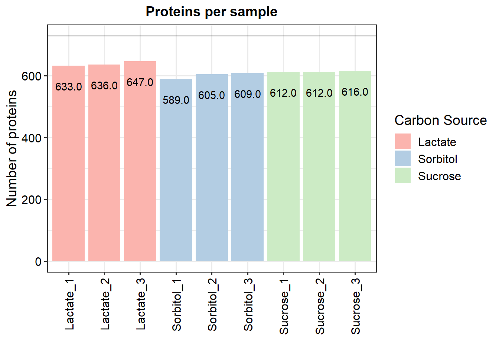
Protein coverage
Protein coverage in all samples
p <- plot_coverage(data_filt) + scale_fill_brewer(palette = "Paired")
p <- p + geom_text(aes(label=Freq), vjust=1.6, color="white")
#ggsave("./results/Protein coverage.pdf", width = 12, height = 6)Combine the two plots from above.
p.num.prot / p 
We see that there is almost even coverage in all samples.
Normalization
Tranformation of LFQ values to stabilize the variance before we calcualte differential abundance.
data_norm <- normalize_vsn(data_filt)Mean vs Sd plot
mds_plot <- meanSdPlot(data_norm) 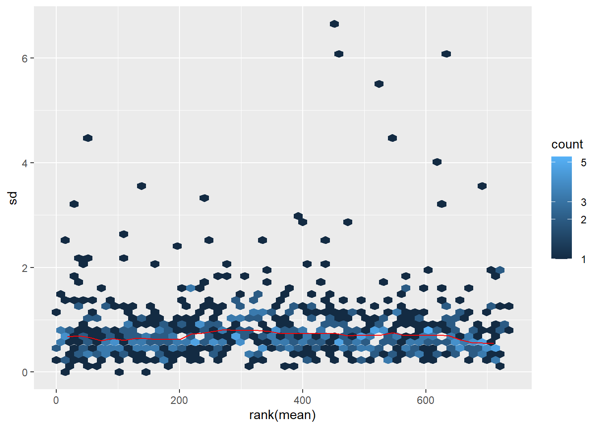
# if you want to customize you can access the plot as shown below
#mds_plot$gg + theme_bw() + scale_fill_distiller(palette = "RdPu")Compare raw and normalized data
sub_cols <- c(Lactate= "#e63946", Sorbitol="#2a9d8f", Sucrose="#1d3557")
p.norm <- plot_normalization(data_filt, data_norm)
# specify colors
p.norm + scale_fill_manual(values = sub_cols)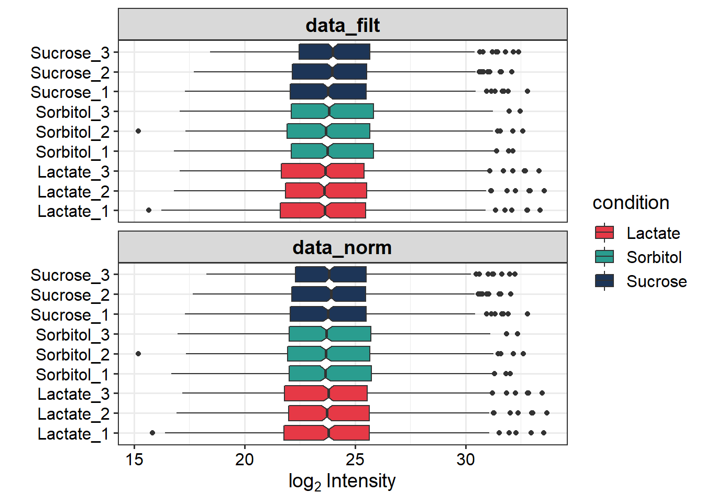
For this dataset we do not see “large” difference.
https://www.bioconductor.org/packages/release/bioc/vignettes/DEP/inst/doc/MissingValues.html
Missing values
Check for missing values
plot_missval(data_filt)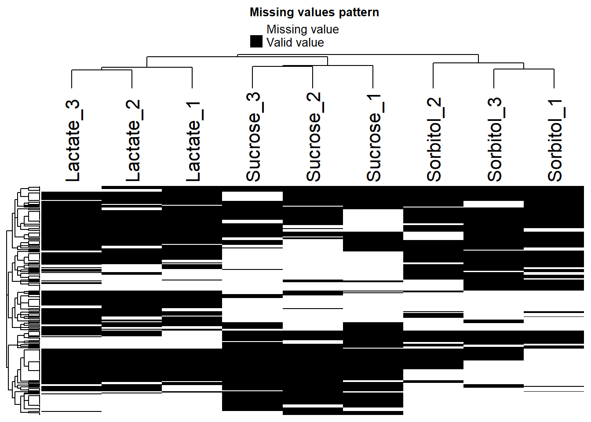
To get an idea of how missing values are affec Plot intensity distributions and cumulative fraction of proteins with and without missing values.
# Plot intensity distributions and cumulative fraction of proteins with and without missing values
plot_detect(data_filt)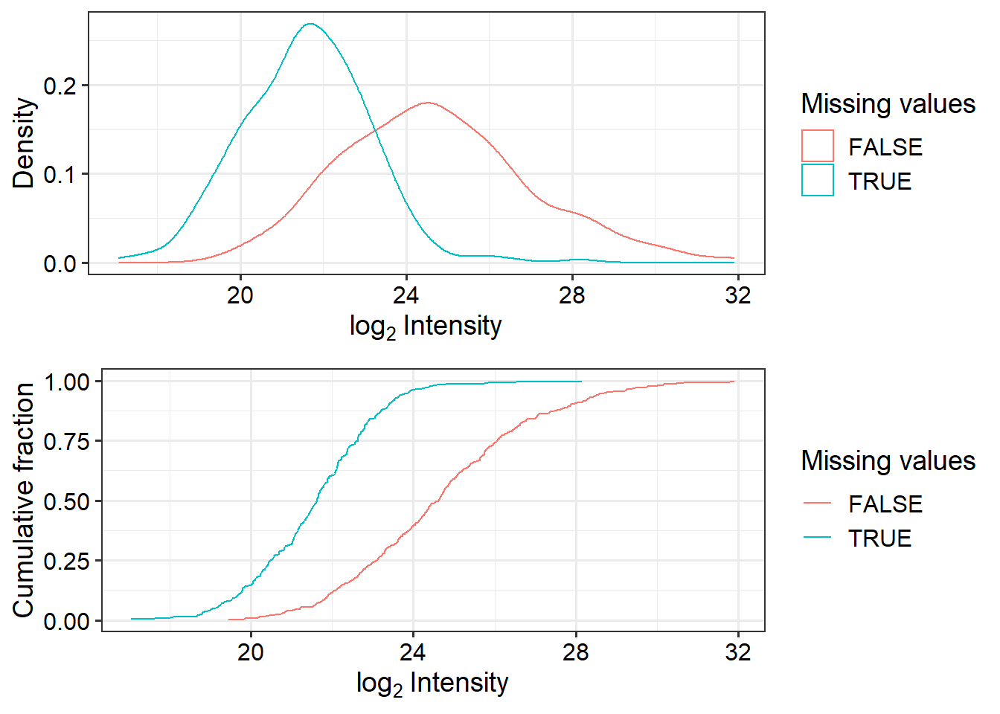
Seems there are proteins that are low abundant in some samples are missing in others. We will impute the missing values.
Note from MSnbase-
MinProb- Performs the imputation of left-censored missing data by random draws from a Gaussian distribution centred to a minimal value. Considering an expression data matrix with n samples and p features, for each sample, the mean value of the Gaussian distribution is set to a minimal observed value in that sample. The minimal value observed is estimated as being the q-th quantile (default q = 0.01) of the observed values in that sample. The standard deviation is estimated as the median of the feature standard deviations. Note that when estimating the standard deviation of the Gaussian distribution, only the peptides/proteins which present more than 50% recorded values are considered.
#data_norm <- normalize_vsn(data_filt)
set.seed(2156)
# All possible imputation methods are printed in an error, if an invalid function name is given.
# Impute missing data using random draws from a Gaussian distribution centered around a minimal value (for MNAR)
data_imp <- impute(data_norm, fun = "MinProb", q = 0.01)## [1] 0.6969534# 0.6969534# Plot intensity distributions before and after imputation
p.imput <- plot_imputation(data_norm, data_imp)
p.imput + scale_color_manual(values = sub_cols)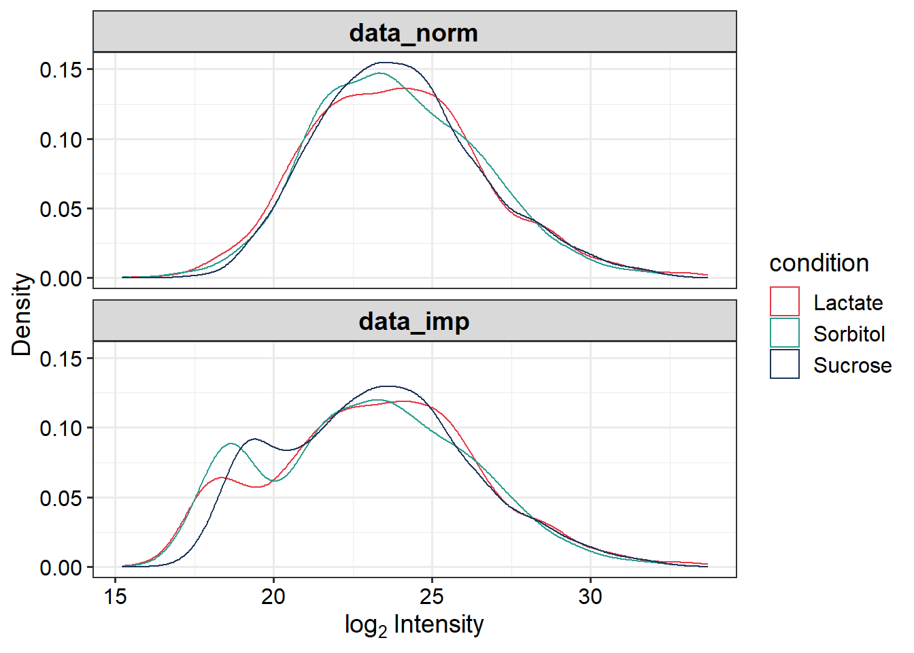
Global visualisation
PCA
Use all detected proteins and do a PCA for visualizing if there is clustering of replicates and conditions.
p.pca <- plot_pca(data_imp, x = 1, y = 2,
n = nrow(data_imp@assays), # use all detected proteins
point_size = 4, label=F) +
ggtitle("L2-7") +
scale_color_manual("Carbon Soruce", values = sub_cols)
p.pca## Warning: Use of `pca_df[[indicate[1]]]` is discouraged. Use
## `.data[[indicate[1]]]` instead.## Warning: Use of `pca_df[[indicate[2]]]` is discouraged. Use
## `.data[[indicate[2]]]` instead.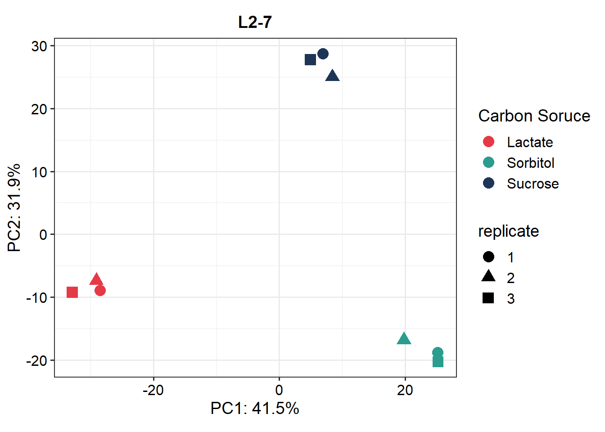
Correlation
Matrix
cor_matrix <- plot_cor(data_imp,
significant = F,
lower = 0,
upper = 1,
pal = "GnBu",
indicate = c("condition", "replicate"),
plot = F)
cor_matrix## Lactate_1 Lactate_2 Lactate_3 Sorbitol_1 Sorbitol_2 Sorbitol_3
## Lactate_1 1.0000000 0.9450480 0.9387531 0.7532409 0.7851102 0.7564771
## Lactate_2 0.9450480 1.0000000 0.9465379 0.7539535 0.7679748 0.7586903
## Lactate_3 0.9387531 0.9465379 1.0000000 0.7317767 0.7593450 0.7340239
## Sorbitol_1 0.7532409 0.7539535 0.7317767 1.0000000 0.8971698 0.9333252
## Sorbitol_2 0.7851102 0.7679748 0.7593450 0.8971698 1.0000000 0.9062346
## Sorbitol_3 0.7564771 0.7586903 0.7340239 0.9333252 0.9062346 1.0000000
## Sucrose_1 0.7728223 0.7737029 0.7504688 0.7695960 0.7820167 0.7666820
## Sucrose_2 0.7826474 0.7888448 0.7641844 0.7992334 0.8019030 0.7981853
## Sucrose_3 0.7806216 0.7886120 0.7686140 0.7707856 0.7880199 0.7686243
## Sucrose_1 Sucrose_2 Sucrose_3
## Lactate_1 0.7728223 0.7826474 0.7806216
## Lactate_2 0.7737029 0.7888448 0.7886120
## Lactate_3 0.7504688 0.7641844 0.7686140
## Sorbitol_1 0.7695960 0.7992334 0.7707856
## Sorbitol_2 0.7820167 0.8019030 0.7880199
## Sorbitol_3 0.7666820 0.7981853 0.7686243
## Sucrose_1 1.0000000 0.9377800 0.9378931
## Sucrose_2 0.9377800 1.0000000 0.9371358
## Sucrose_3 0.9378931 0.9371358 1.0000000Plot correlation
Plot heatmap for the correlation matrix.
pheatmap(cor_matrix)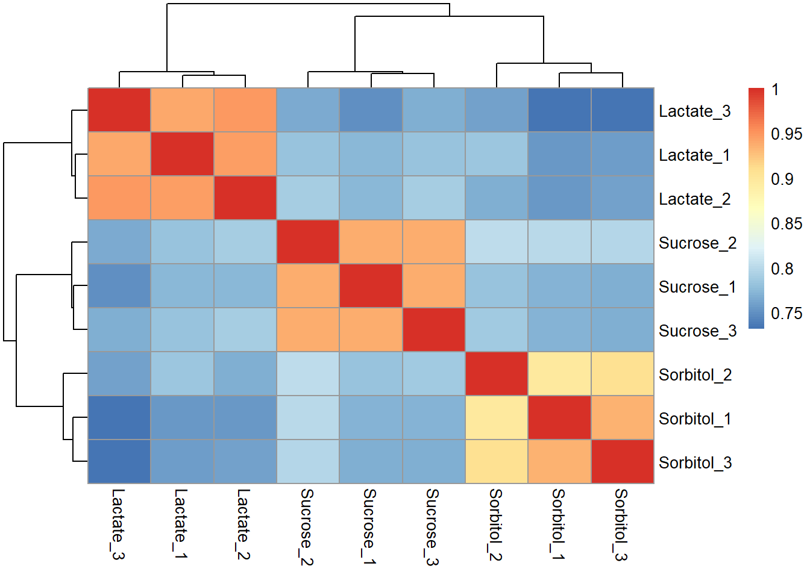
Differential enrichment analysis
Based on linear models and empherical Bayes statistics. Uses limma and fdrtools
# Test all possible comparisons of samples
data_diff_all_contrasts <- test_diff(data_imp, type = "all")## Tested contrasts: Lactate_vs_Sorbitol, Lactate_vs_Sucrose, Sorbitol_vs_SucroseIdentify/Mark significant proteins
dep <- add_rejections(data_diff_all_contrasts, alpha = 0.05, lfc = 1.5)Visualizations
Plot top protiens
plot_heatmap(dep,
type = "centered",
kmeans = F,
col_limit = 4,
show_row_names = T,
indicate = c("condition", "replicate"),
clustering_distance = "spearman")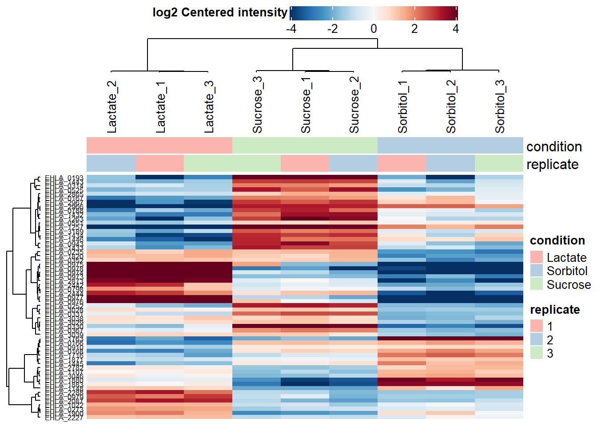
Plot comparisons
p.heat <- plot_heatmap(dep,
type = "contrast",
kmeans = F,
col_limit = 4,
show_row_names = T,
indicate = c("condition", "replicate"),
show_row_dend= T,
row_dend_side = "right",
width = 0.5,
gap = unit(1, "mm"))## Warning: Heatmap annotation only applicable for type = 'centered'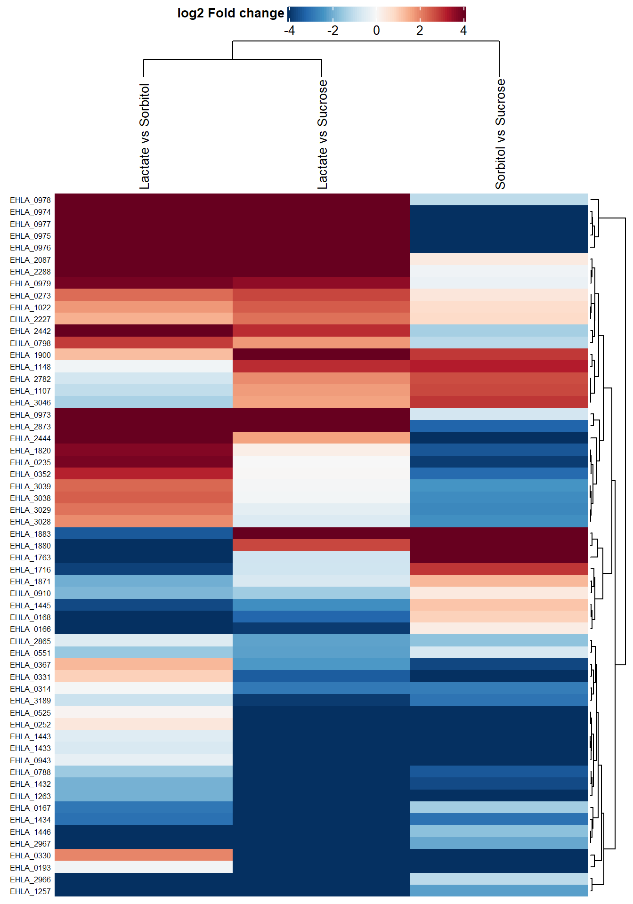
Plot volcano
remove_grids <- theme(panel.grid.major = element_blank(),
panel.grid.minor = element_blank(),
panel.background = element_blank(),
axis.line = element_line(colour = "black"))
p.Lactate_vs_Sorbitol <- plot_volcano(dep,
contrast = "Lactate_vs_Sorbitol",
label_size = 2,
add_names = TRUE) + remove_grids
p.Lactate_vs_Sorbitol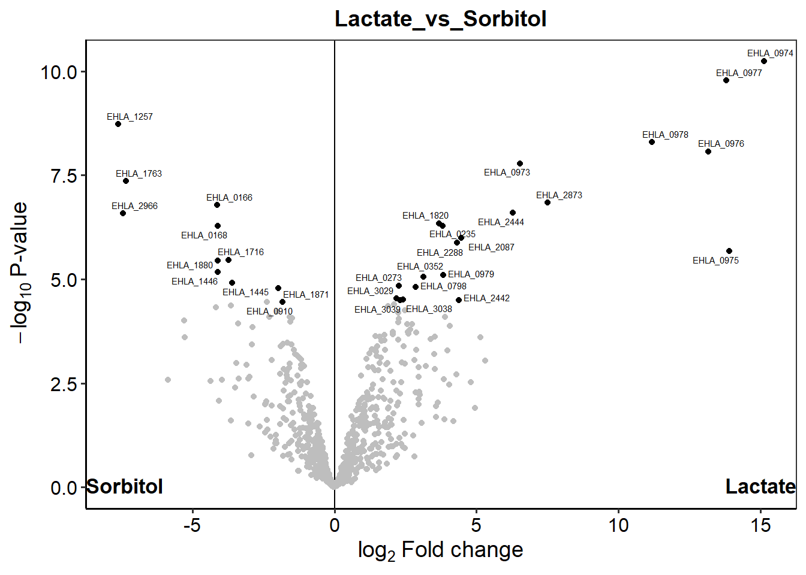
Plot DA proteins
key_prots <- c("EHLA_0973","EHLA_0974","EHLA_0975", "EHLA_0976", "EHLA_0977", "EHLA_0978", "EHLA_0979")
rep_cols <- c("1"="#ffc49b","2"="#e05780","3"="#adb6c4")
plot_single(dep,
proteins = key_prots,
type = "centered") +
scale_color_manual("Replicate", values = rep_cols)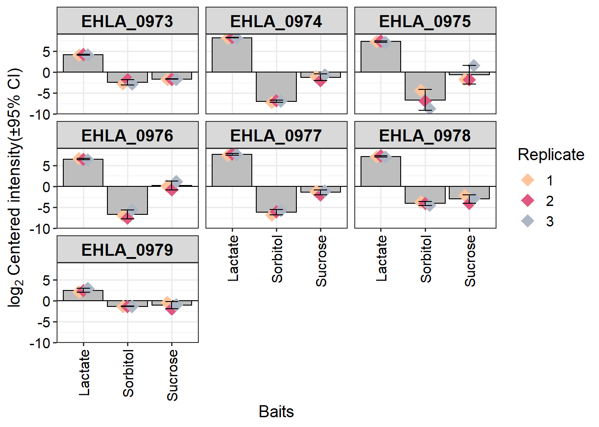
Pathway analysis
Get the significant results and store them as csv file.
data_results <- get_results(dep)
#write.csv(data_results, "./results/L2_comparison_all.csv")
# Number of significant proteins
data_results %>% filter(significant) %>% nrow()## [1] 59colnames(data_results)## [1] "name" "ID"
## [3] "Lactate_vs_Sorbitol_p.val" "Lactate_vs_Sucrose_p.val"
## [5] "Sorbitol_vs_Sucrose_p.val" "Lactate_vs_Sorbitol_p.adj"
## [7] "Lactate_vs_Sucrose_p.adj" "Sorbitol_vs_Sucrose_p.adj"
## [9] "Lactate_vs_Sorbitol_significant" "Lactate_vs_Sucrose_significant"
## [11] "Sorbitol_vs_Sucrose_significant" "significant"
## [13] "Lactate_vs_Sorbitol_ratio" "Lactate_vs_Sucrose_ratio"
## [15] "Sorbitol_vs_Sucrose_ratio" "Lactate_centered"
## [17] "Sorbitol_centered" "Sucrose_centered"#write.csv(data_results_sig, "./results/L2_comparison_significant.csv")There are a number of packages that allow for further analysis of differentially expressed proteins. An overview can be found here by Guangchuang Yu. Below is only a demonstration of the possibilities. Please refer to clusterProfiler-book for detailed information.
library(clusterProfiler)## ## Registered S3 method overwritten by 'clusterProfiler':
## method from
## as.data.frame.compareClusterResult enrichplot## clusterProfiler v3.17.3 For help: https://guangchuangyu.github.io/software/clusterProfiler
##
## If you use clusterProfiler in published research, please cite:
## Guangchuang Yu, Li-Gen Wang, Yanyan Han, Qing-Yu He. clusterProfiler: an R package for comparing biological themes among gene clusters. OMICS: A Journal of Integrative Biology. 2012, 16(5):284-287.##
## Attaching package: 'clusterProfiler'## The following object is masked from 'package:DelayedArray':
##
## simplify## The following object is masked from 'package:IRanges':
##
## slice## The following object is masked from 'package:S4Vectors':
##
## rename## The following object is masked from 'package:stats':
##
## filterlibrary(pathview)## ## ##############################################################################
## Pathview is an open source software package distributed under GNU General
## Public License version 3 (GPLv3). Details of GPLv3 is available at
## http://www.gnu.org/licenses/gpl-3.0.html. Particullary, users are required to
## formally cite the original Pathview paper (not just mention it) in publications
## or products. For details, do citation("pathview") within R.
##
## The pathview downloads and uses KEGG data. Non-academic uses may require a KEGG
## license agreement (details at http://www.kegg.jp/kegg/legal.html).
## ##############################################################################library(enrichplot)##
## Attaching package: 'enrichplot'## The following object is masked from 'package:ggpubr':
##
## color_palettelibrary(DOSE)## DOSE v3.14.0 For help: https://guangchuangyu.github.io/software/DOSE
##
## If you use DOSE in published research, please cite:
## Guangchuang Yu, Li-Gen Wang, Guang-Rong Yan, Qing-Yu He. DOSE: an R/Bioconductor package for Disease Ontology Semantic and Enrichment analysis. Bioinformatics 2015, 31(4):608-609Here, we demonstrate this using DA proteins between Lactate and sorbitol growth condition.
## Prep data
lac_sor <- data_results[, c("name","Lactate_vs_Sorbitol_significant", "Lactate_vs_Sorbitol_ratio", "Lactate_vs_Sorbitol_p.adj")]
# keep only significant differences
#foldchanges.1 <- subset(lac_sor, Lactate_vs_Sorbitol_p.adj <= 0.05)
foldchanges.1 = lac_sor$Lactate_vs_Sorbitol_ratio
names(foldchanges.1) = lac_sor$name
# we use a threshold of -1.2 or + 1.2
gene <- names(foldchanges.1)[abs(foldchanges.1) > 1.5]KEGG enrichment
Identify KEGG pathways that are enriched.
Lac_sor_kegg <- enrichKEGG(gene,
organism = 'ehl',
pvalueCutoff = 0.05)## Reading KEGG annotation online:
##
## Reading KEGG annotation online:DT::datatable(as.data.frame(Lac_sor_kegg))Visualize enriched KEGG pathways.
barplot(Lac_sor_kegg, drop = F, showCategory = 12)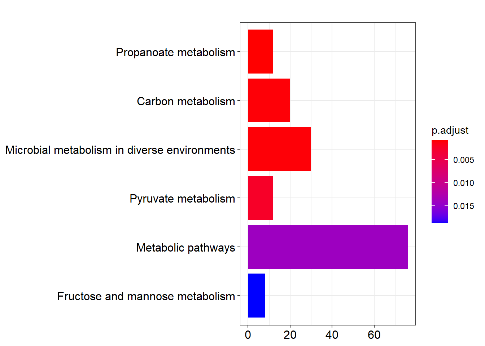
enrichplot::cnetplot(Lac_sor_kegg,categorySize = "pvalue",
foldChange = foldchanges.1, colorEdge= TRUE)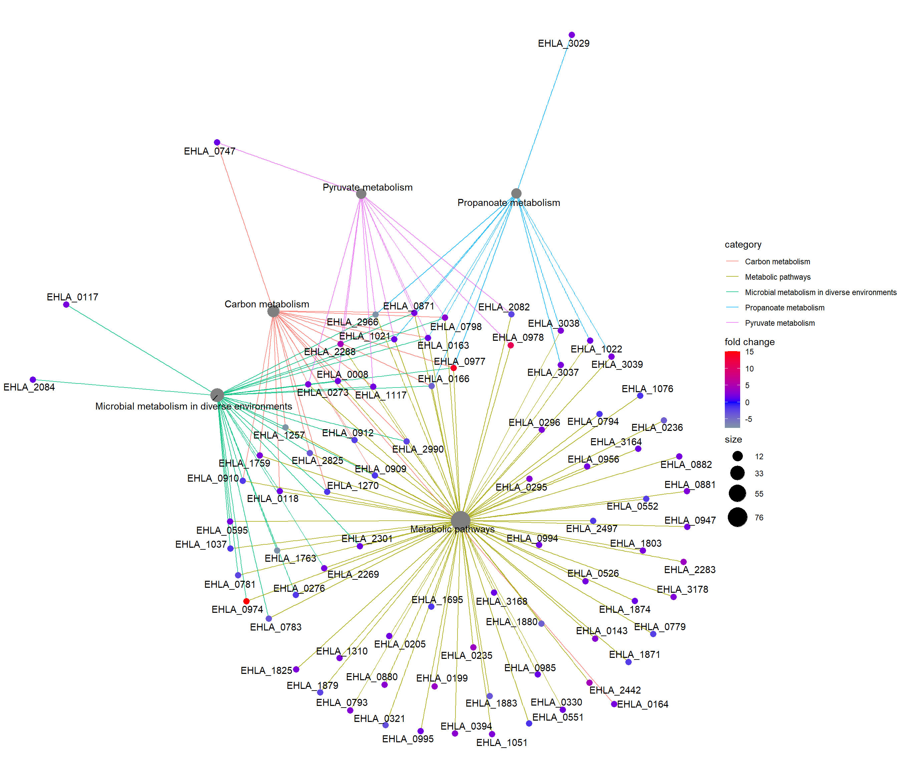
enrichplot::emapplot(Lac_sor_kegg)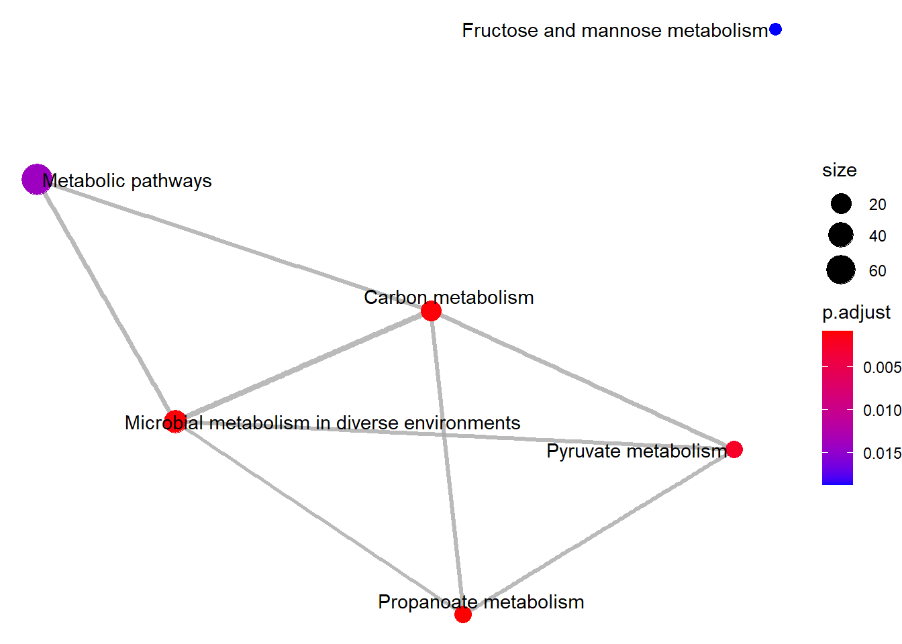
heatplot(Lac_sor_kegg, foldChange=foldchanges.1,showCategory = 10) + ggtitle("Heatplot")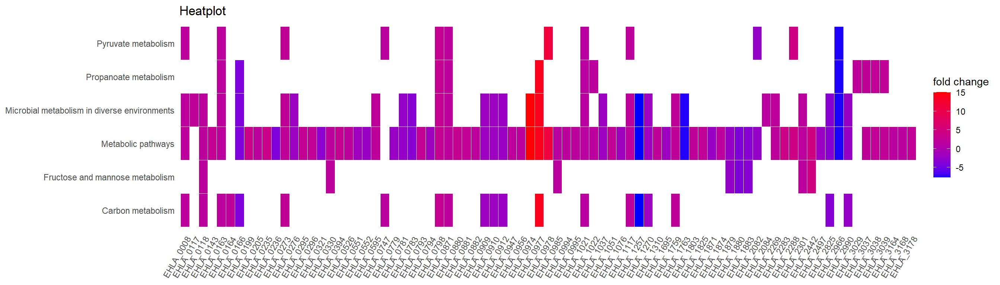
mkk <- enrichMKEGG(gene = gene,
organism = 'ehl',
pvalueCutoff = 0.25,
minGSSize = 5,
qvalueCutoff = 0.25)## Reading KEGG annotation online:
##
## Reading KEGG annotation online:barplot(mkk)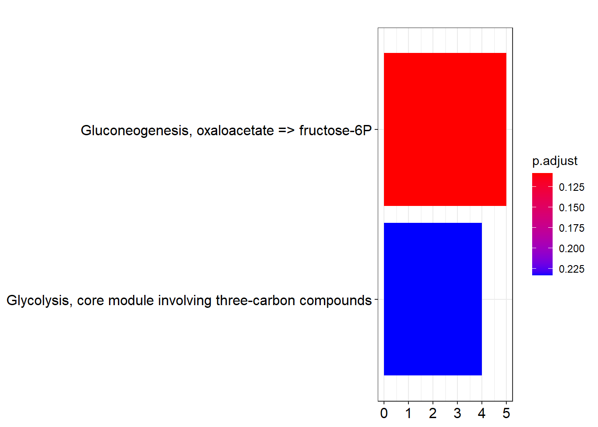
KEGG metabolic map
We can also view proteins that were identified in Butanoate metabolism on a KEGG metabolic map. Note: When you run browseKEGG it will open a new window with the default web-browser on your PC/Laptop.
browseKEGG(Lac_sor_kegg, 'ehl00650')sessionInfo()## R version 4.0.2 (2020-06-22)
## Platform: x86_64-w64-mingw32/x64 (64-bit)
## Running under: Windows 10 x64 (build 18363)
##
## Matrix products: default
##
## locale:
## [1] LC_COLLATE=English_Netherlands.1252 LC_CTYPE=English_Netherlands.1252
## [3] LC_MONETARY=English_Netherlands.1252 LC_NUMERIC=C
## [5] LC_TIME=English_Netherlands.1252
##
## attached base packages:
## [1] parallel stats4 stats graphics grDevices utils datasets
## [8] methods base
##
## other attached packages:
## [1] DOSE_3.14.0 enrichplot_1.9.3
## [3] pathview_1.29.1 clusterProfiler_3.17.3
## [5] imputeLCMD_2.0 impute_1.63.0
## [7] pcaMethods_1.81.0 norm_1.0-9.5
## [9] tmvtnorm_1.4-10 gmm_1.6-5
## [11] sandwich_2.5-1 mvtnorm_1.1-1
## [13] patchwork_1.0.1 ggpubr_0.4.0
## [15] SummarizedExperiment_1.19.6 DelayedArray_0.15.7
## [17] matrixStats_0.56.0 Matrix_1.2-18
## [19] Biobase_2.49.1 GenomicRanges_1.41.6
## [21] GenomeInfoDb_1.25.11 IRanges_2.23.10
## [23] S4Vectors_0.27.12 BiocGenerics_0.35.4
## [25] pheatmap_1.0.12 dplyr_1.0.2
## [27] ggplot2_3.3.2 DEP_1.11.0
##
## loaded via a namespace (and not attached):
## [1] shinydashboard_0.7.1 tidyselect_1.1.0 RSQLite_2.2.0
## [4] AnnotationDbi_1.51.3 htmlwidgets_1.5.1 grid_4.0.2
## [7] BiocParallel_1.23.2 scatterpie_0.1.5 munsell_0.5.0
## [10] codetools_0.2-16 preprocessCore_1.51.0 DT_0.15
## [13] withr_2.2.0 colorspace_1.4-1 GOSemSim_2.14.2
## [16] knitr_1.29 ggsignif_0.6.0 mzID_1.27.0
## [19] labeling_0.3 KEGGgraph_1.49.1 GenomeInfoDbData_1.2.3
## [22] polyclip_1.10-0 bit64_4.0.5 farver_2.0.3
## [25] downloader_0.4 vctrs_0.3.4 generics_0.0.2
## [28] xfun_0.17 R6_2.4.1 doParallel_1.0.15
## [31] clue_0.3-57 graphlayouts_0.7.0 bitops_1.0-6
## [34] fgsea_1.14.0 gridGraphics_0.5-0 assertthat_0.2.1
## [37] promises_1.1.1 scales_1.1.1 ggraph_2.0.3
## [40] gtable_0.3.0 affy_1.67.1 tidygraph_1.2.0
## [43] rlang_0.4.7 mzR_2.23.1 GlobalOptions_0.1.2
## [46] splines_4.0.2 rstatix_0.6.0 hexbin_1.28.1
## [49] broom_0.7.0 BiocManager_1.30.10 yaml_2.2.1
## [52] reshape2_1.4.4 abind_1.4-5 crosstalk_1.1.0.1
## [55] backports_1.1.10 httpuv_1.5.4 qvalue_2.20.0
## [58] tools_4.0.2 ggplotify_0.0.5 affyio_1.59.0
## [61] ellipsis_0.3.1 RColorBrewer_1.1-2 MSnbase_2.15.6
## [64] ggridges_0.5.2 Rcpp_1.0.5 plyr_1.8.6
## [67] zlibbioc_1.35.0 purrr_0.3.4 RCurl_1.98-1.2
## [70] GetoptLong_1.0.2 viridis_0.5.1 cowplot_1.1.0
## [73] zoo_1.8-8 haven_2.3.1 ggrepel_0.8.2
## [76] cluster_2.1.0 magrittr_1.5 data.table_1.13.0
## [79] DO.db_2.9 openxlsx_4.2.2 circlize_0.4.10
## [82] ggnewscale_0.4.3 ProtGenerics_1.21.0 hms_0.5.3
## [85] mime_0.9 evaluate_0.14 xtable_1.8-4
## [88] XML_3.99-0.5 rio_0.5.16 readxl_1.3.1
## [91] gridExtra_2.3 shape_1.4.5 compiler_4.0.2
## [94] tibble_3.0.3 ncdf4_1.17 crayon_1.3.4
## [97] shadowtext_0.0.7 htmltools_0.5.0 later_1.1.0.1
## [100] tidyr_1.1.2 DBI_1.1.0 tweenr_1.0.1
## [103] ComplexHeatmap_2.5.5 MASS_7.3-51.6 car_3.0-9
## [106] readr_1.3.1 vsn_3.57.0 igraph_1.2.5
## [109] forcats_0.5.0 pkgconfig_2.0.3 rvcheck_0.1.8
## [112] foreign_0.8-80 MALDIquant_1.19.3 foreach_1.5.0
## [115] XVector_0.29.3 stringr_1.4.0 digest_0.6.25
## [118] graph_1.67.1 Biostrings_2.57.2 rmarkdown_2.3
## [121] cellranger_1.1.0 fastmatch_1.1-0 curl_4.3
## [124] shiny_1.5.0 rjson_0.2.20 lifecycle_0.2.0
## [127] jsonlite_1.7.1 carData_3.0-4 viridisLite_0.3.0
## [130] limma_3.45.14 pillar_1.4.6 lattice_0.20-41
## [133] httr_1.4.2 KEGGREST_1.28.0 fastmap_1.0.1
## [136] GO.db_3.11.4 glue_1.4.2 zip_2.1.1
## [139] fdrtool_1.2.15 png_0.1-7 iterators_1.0.12
## [142] Rgraphviz_2.33.0 bit_4.0.4 ggforce_0.3.2
## [145] stringi_1.5.3 blob_1.2.1 org.Hs.eg.db_3.11.4
## [148] memoise_1.1.0